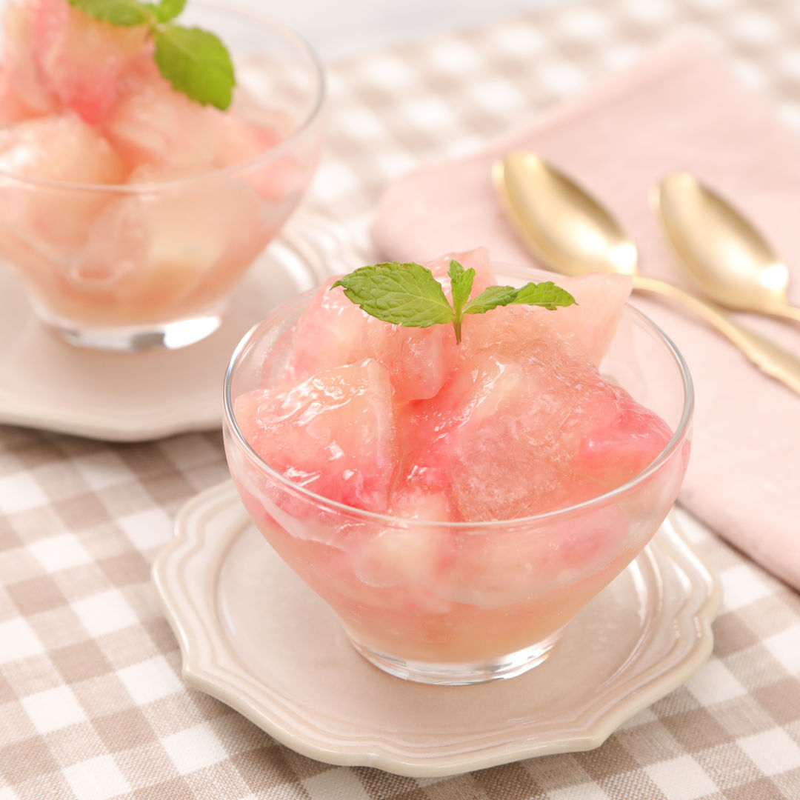

桃ゼリー レシピ

冷凍した桃をゼリー液に加えたらあっという間にふるふるゼリーの出来上がり☆
桃がたくさんある時に冷凍しておくと便利です。
■材料（3~4人分〔15分・桃を冷凍する時間を除く〕）
- 桃 2個
- 炭酸水 150ml
- 粉ゼラチン 5g
- 水 大さじ1
- レモン汁 大さじ1
- ミント お好みで
- 【A】
- 水 50ml
- 白ワイン 大さじ3
- 砂糖 50g
■工程
- 桃は皮をむいてひと口大に切り、レモン汁を絡める。
- ラップを敷いたバットに<1>をできるだけくっつかないように並べ、上からもラップを被せて冷凍庫で凍らせる。
- 粉ゼラチンは水に振り入れてかき混ぜ、ふやかす。
- 小鍋に【A】を入れて火にかけ、沸騰させてアルコールを飛ばす
- 4.を火から下ろし、3.を加えてへらで混ぜる。ゼラチンが完全に溶けたらボウルに移し、炭酸水を加える。
- 5.のボウルの底を氷水に当て、2.を加える。へらで混ぜ、とろみがついてふるふると固まってきたら器に盛り付ける。
- お好みでミントを飾る。
■コツ・ポイント
桃は冷凍する前にレモン汁を絡めておくと茶色く変色するのを抑えられます。 ゼラチンは完全に溶かしてから炭酸水を加えてください。 炭酸水を加えるとシュワシュワした食感を楽しめます♪